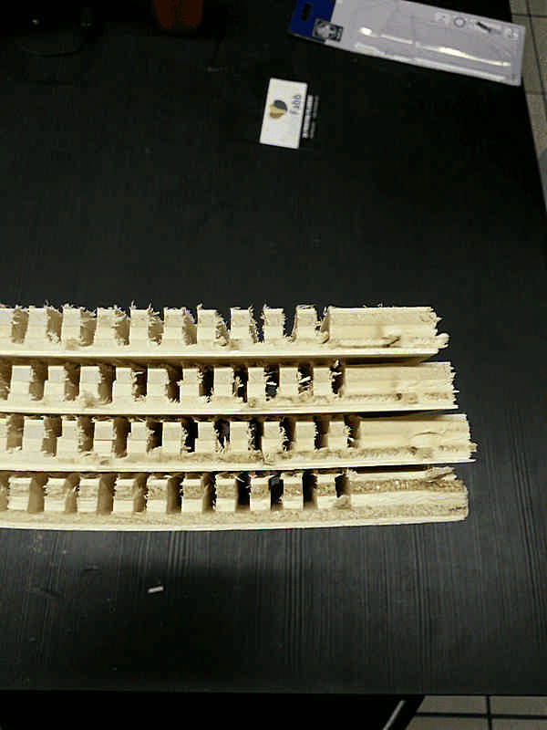
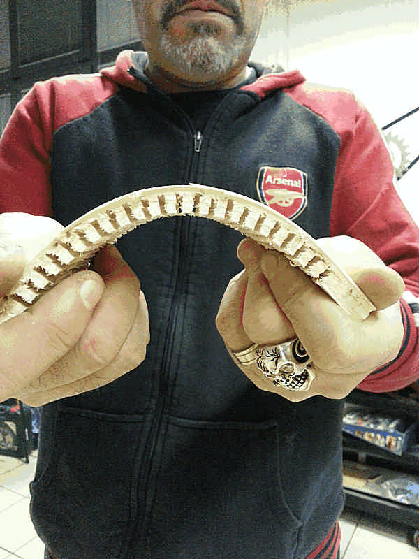

David Montenegro
FAB ACADEMY 2015
Assignments | Final Project | About | Contact
03_18 Computer Controlled Machining
On wednesday 03.18.2015 we’ve got the seventh online lesson with Neil Gershenfeld.
The next lessons can be found on the Fab Academy account on Vimeo.
For this week the assignment was
** make something big **
The whole assignment has been divided in tree parts: design, test, CAM setting and machining.
Design
First I started searching online for some example. What I’ve found has reminded me that wood (as a material) has an history as old as humankind and the techniques to work it, despite the limitations implied by its structure, are virtually infinite and deeply explored along the history of design.
Furthermore bended wood has inspired splines, a curve defined by some anchor point that you can find in almost any computer graphic program; form that point of view the bound between nature and computing has never been so strong.

If you like geometry, nature, mathematics and materials here you can find Marten Nettelbladt blog and website within a lot of inspiring thoughts. It’s very recommended to read it, even quickly, just to have an idea of how much complex and what stands behind a bended piece of wood.
In this Pinterest you can find some inspiring details about what a great woodworker can do.

A very interesting project is this Spring Stool by Carolien Laro.

Of course you can also make funnier things like these


Just to talk about making something BIG the Chair of Structural Design at ETH and the Emergent Technologies and Design program at the Architectural Association (AA) in London have collaborated to design this pavillion that measures about 2.66mt wide and 12mt long.

I’m a newbie of these kind of stuff so to avoid to make something I can’t deal with I decided to design a stand for the brand new DeltaWasp that has just arrived to Fablab Cascina; a triangular column with just one direction bending made by inner kerfs.
Due to the stress generated by the printer the structure has to be very sturdy; furthermore the center of gravity has to be lowered to guarantee stability to the whole structure, so the lower part can be filled with sand or any other weight. A smart evolution of this project cam be a larger base to improve stability and a larger top to gain three little standing desk (maybe it will be a further improvement, right now it’s impossible to accomplish).
In my mind the shape was simple and clear from the beginning so I started taking some measures and designing the profile on Rhino.
Test
Before to cut the big piece I tried different pattern and different materials to test the wood behaviour and find a good pattern.
I started from a 300x300x20mm stock of plywood, 6mm flute end-mill and 20mm and 14mm spacing, leaving 2mm and 4mm at the bottom.

I made several mistakes.
First - I wasted a good piece of wood.
Second - It has to be milled deeply to bent enough, and it takes time.
Third - It was not the material that I’d used to make the column, so the test is unreliable.
Fourth - The 6mm flute end-mill was too big, and the 90deg was even bigger.
Fifth - The pattern was too coarse.
Sixth - The amount of material left at the bottom was too much.
Seventh - The grain was in the opposite direction
Making mistakes is ok, but some of them are naive and can be easily avoided simply paying more attention on what you are actually doing.
I made some more test with a 10mm plywood, 3mm flute endmill, 7mm spacing, leaving 2mm, 2,5mm, 3mm and 3,5mm at the bottom.

The result was far better.

At the end is much more important that the grain of the bending layer is perpendicular to the cutting direction; as a matter of fact the four test with some slight difference in the thickness of the bending layer behave at the same way.
Now I’ve to bend 15mm long to 120deg, and to avoid this
I’m going to wet the wood to make it more flexible.
CAM setup and Machining
In CamBam the main parameter to be aware of are:
- Stock dimensions: it defines the dimentions of the stock you’re going to work with.
- Depth increment: how much the end-mill shifts down for every pass.
- Depth target: how deep the end-mill has to get.
- Cut Feedrate: how fast the mill has to move in mm per minute.
You can obviously set a lot of parameters, but these makes the 90% of the job; they may change depending on material and on the end-mill; setting good ones can drastically reduce the time needed for a job and perform better results.
For the first test I used thise configuration: Stock dimensions: 300x300x20mm Depth increment: 0.4mm Depth target: 16mm, 18mm Cut Feedrate: 800mm/min
The cut on the plywood was fairy clean (I used a single straight flute).
It takes a lot of time, about 2hrs to cut this (without text)
Than for the second test I used this other settings
Stock dimensions: 300x170x10mm
Depth increment: 5mm
Depth target: 8mm, 7.5mm, 7mm, 6.5mm
Cut Feedrate: 800mm/min
It has taken too much time anyway, and the result was still brakes.
I can’t spend so much time milling a sheet of 1500x800mm of plywood and at the end it breaks anyway so I used the same bending radius and the same stock thickness to make a scaled reliable model and verify “quickly”.
I used a 10mm plywood for the sides and a 15mm OSB for the top and bottom.
I used the following settings:
Stock dimensions: 630x300x10mm (ply), 340x180x15mm (osb)
Depth increment: 0.4mm
Depth target: 7mm
Cut Feedrate: 2500mm/min
Feeling a lot of frustration in this sperimentation because of the self-learning process I leave this test behind and I started a new one: a stool inspired on the Flip Around Table ($250), but mine doesn’t need bolts to be assembled and in the end it is totally different.


Has been a great satisfaction to discover that my stool is fairy similar to Cadreghino, the stool Alberto Meda has designed for “Back to stool 2014” competition.

Accidents and mistakes continued happening. I’ve no photos because…well, you’ll see.
So I made my dxf file reading on the mill “8mm”, so I setted the dogbones on this size. Unfortunately it refers to the shaft, not to the mill, so it started milling too much. I spotted it almost immediately so I stopped the mill, fixed the design, renest, exported, reset the CAM, reset the zero and restarted milling.
Now

The most important lesson I’ve (re)learned is that enthusiasm is the first (and most of the time the only) thing that moves you making things better. You can try making something challenging and probably you’ll fail; if you know it you’ll retry and retry, but you’re not a machine and frustration, loneliness, boredom and tiredness may make you nervous and lose your enthusiasm, especially if on paper you have all the time you may need, but in fact you don’t. Don’t lose enthusiasm making slow things and waiting watching the machine works properly (for the first test I spent some days because I used a very slow CAM setting). Fail is ok, fail a lot is ok too, but fail alone in useless time consuming activities is not. It’s bad and it may stop you.